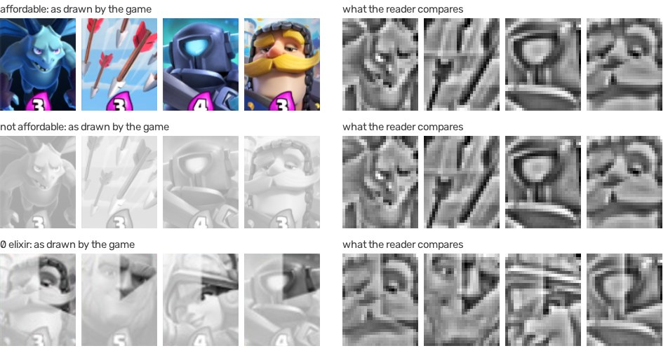
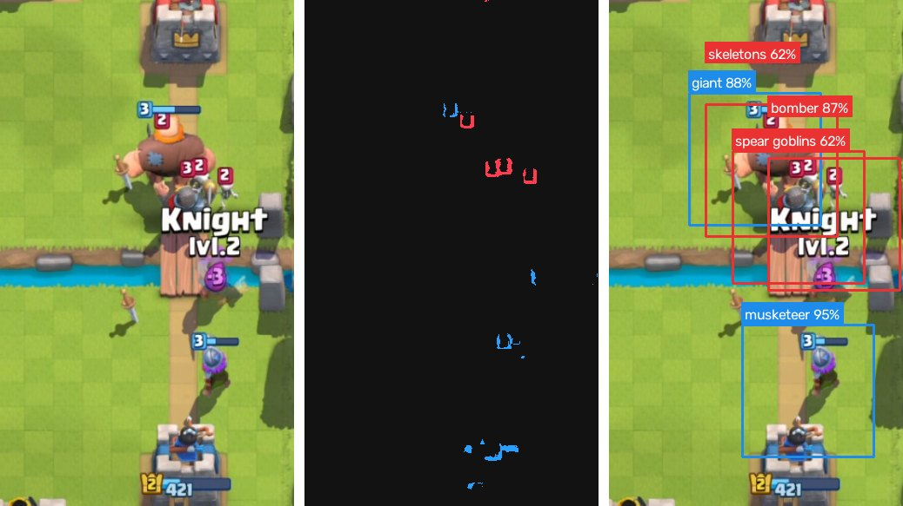
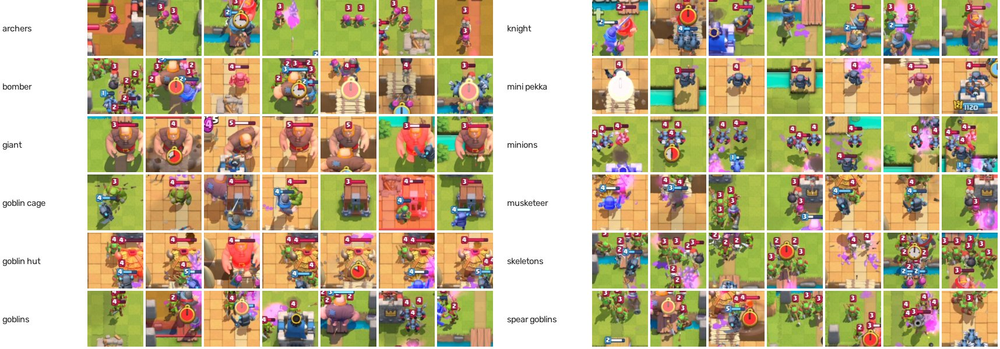
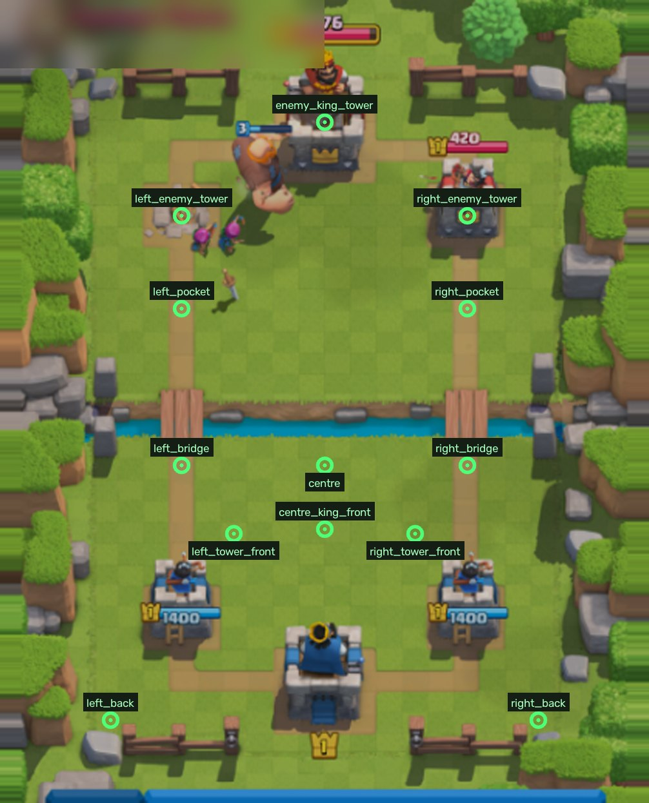
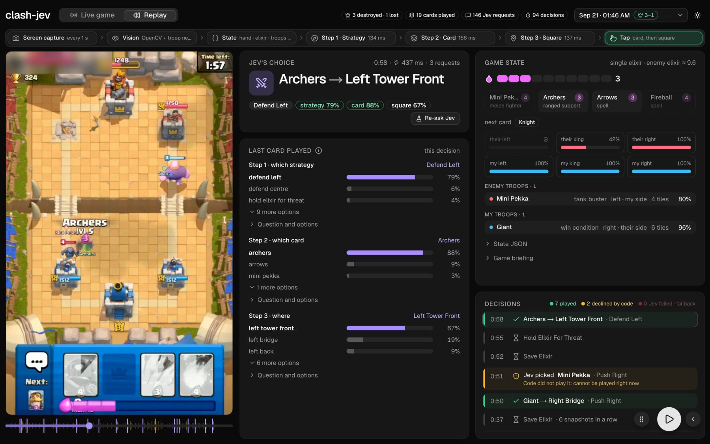
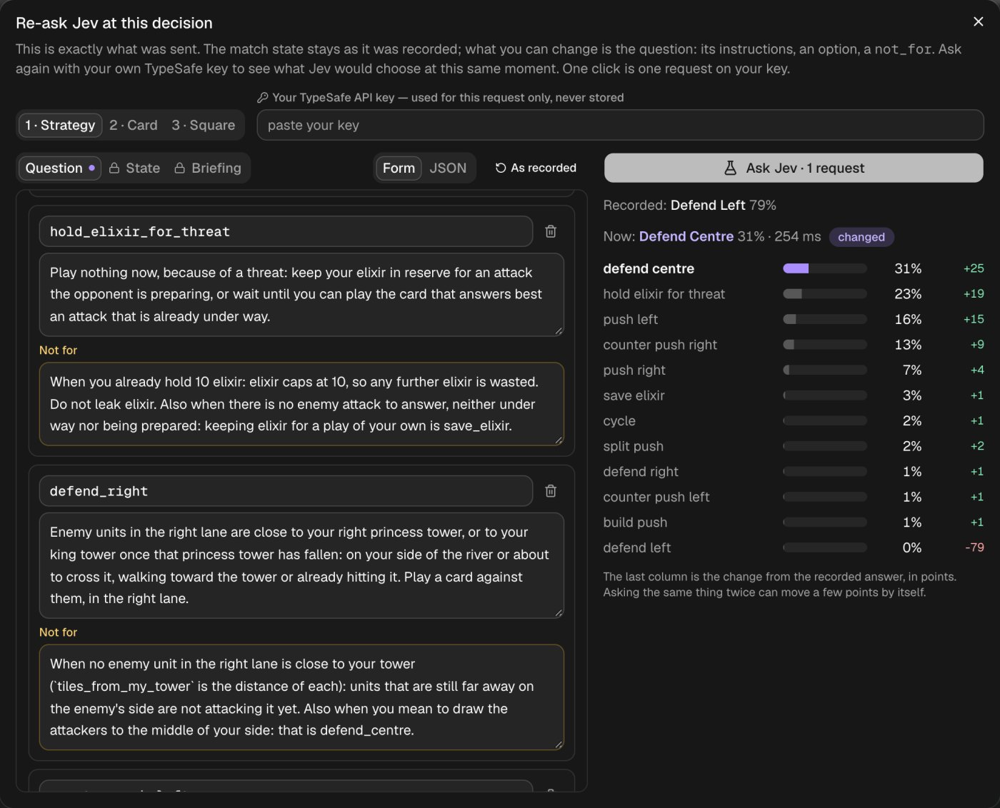

I got early access to Jev, TypeSafe AI's new System One model, and decided to play around with it.
Jev is a decision model. TypeSafe describes System One models as "built to make fast, structured decisions that software can use directly". It does not generate text.
| Jev | |
|---|---|
| You send | A state and one or more named questions. The state is text, a JSON object or an array. |
| Question types | A choice among labelled options, a score on a numeric scale, or a yes/no that TypeSafe calls a noul. |
| A choice question | Instructions and a map of option names to descriptions. A description is plain text or an object with fields you pick, such as what and not_for. A question holds up to 255 options. |
| You get back | The chosen option, a probability for every option that sums to 1, and a confidence score derived from the shape of that distribution. |
| Speed | About 135 ms a request in my matches. |
| Input | Text only. Everything Jev knows about a match has to reach it as JSON, which is why most of this project is computer vision. |
I built clash-jev, a bot that uses Jev to make near real-time decisions on live game data.
How it works
- An Android tablet streams its screen to my laptop as H.264 video over
adb. - OpenCV reads the hand, the elixir and the towers from each frame. A small network that I trained on pictures I labelled by hand names the troops.
- Once a second the readings become one JSON game state.
- Jev answers three questions about that state. It picks a strategy, then a card, then a square.
- The bot checks that the play is physically possible and taps it on the tablet.
- The bot logs every decision next to a synced video. Any decision can be replayed and asked again on the replay site.
Nothing is trained to play. The bot uses no reinforcement learning and no simulator.
Part 1Architecture
The diagram shows every component, the boundary it runs in, and what crosses each boundary.
- The live loop is one Python process on my laptop, with the tablet on USB.
- Jev is the only external service in the loop. The policy calls it over HTTPS.
- Training runs offline and hands the runtime one ONNX file.
- The replay site is static. Its one function forwards a re-ask request to the TypeSafe API with the viewer's own key.
- The bot does not use an emulator. The game's anti-tamper check closes the game on emulators, and I did not try to get around that check.
Part 2Design decisions
I wanted to measure Jev's decisions and not my own. These are the decisions I made about how to ask, and why.
| Decision | Why |
|---|---|
| Every question carries its full option list. That means all 12 strategies, all 4 cards in hand and every square that is legal for the chosen card. | A shortened list leads Jev toward an answer. I wanted to see whether its general reasoning carries over to a situation it has never seen, such as defending with a Giant, without me selecting the sensible options first. |
The state holds measurements only. It has no playable flag, no list of counters and no previous decision. | A derived fact is me doing part of the reasoning. When the state listed the cards that counter a troop, the right card went from an even split to 98%. That number measured my list. |
| Option texts define and never judge | A not_for that says "not when a tower is under attack" decides on Jev's behalf. A not_for that marks where one strategy becomes its neighbour keeps the options distinct and leaves the judgment to Jev. |
| Code acts only after Jev has chosen | If code removed the cards Jev cannot afford, I could never see Jev choose to wait for one. The log records what Jev wanted even when the bot cannot do it. |
| Three questions in sequence, not one | One question over every combination of strategy, card and square would hold hundreds of options with near-identical descriptions. Three short lists keep the options distinct, and they show at which step a decision went wrong. |
| A fallback is never logged as Jev | When a request fails the bot plays a baseline move. The log gives it its own source, so no analysis of Jev includes a move Jev did not make. |
Part 3Capture
Capture gets the tablet's screen onto the laptop as frames the vision code can read. Every reader gets the newest frame, about 350 ms after the screen showed it.
- The tablet records its own screen with
screenrecordand writes H.264 to standard output. adb exec-outcarries the stream over USB.- One thread decodes it with PyAV and keeps only the newest frame, as a NumPy array.
- The troop watcher, the match loop, the recorder and the page feed each take a copy.
adb exec-out screenrecord --output-format=h264 --size 720x1152 --bit-rate 8M --time-limit 180 -| Choice | Why |
|---|---|
| Video stream, not screenshots | A frame arrives about 350 ms after the screen shows it, for any number of readers. A screenshot over adb takes 1.4 to 4.5 s on the same tablet. |
| Frames are converted in the decoder thread only | PyAV converts lazily, and converting one frame from two threads crashes inside libswscale. Readers copy a finished NumPy array. |
| A packet that fails to decode is skipped | screenrecord stops after three minutes and must be restarted. The first packets after a restart are often damaged, and the next keyframe restores the picture. |
| No new frame means a still screen | H.264 sends only what changed. The last frame is still the current screen. |
| 720 columns | Wide enough to read a ten-pixel badge at double scale, and cheap to decode. |
Screen layout
Screen layout makes every reading independent of the device's resolution.
| Screen layout | |
|---|---|
| Reference layout | I define every reading on a 419×633 layout. |
ScreenMap | Maps a device frame onto the reference, and maps taps back to device pixels. |
| Two affine transforms | Clash Royale scales the arena and the bottom bar as two separate blocks on taller screens. |
| Calibration | Once per aspect ratio, from the tower bars and the river for the arena and from the hand cards for the bottom bar. |
Part 4Reading the board
This stage turns a frame into readings. It reads the hand, the elixir and each tower's health, and it finds every troop with its owner, position and health. Colour thresholds and template matching do most of the work, and one small network names the troops.
| Reading | Method |
|---|---|
| Elixir | Ten sample points along the bar, compared with the bar's purple. |
| Towers | Filled width of each health bar, divided by the widest that bar has been. |
| Troops | Level badges give position, owner and health. The troop network gives the name. |
| Hand, next card | Card art matched against a bank of known cards. |
| Opponent's elixir | An estimate. It refills on the match clock and pays for each new enemy troop. |
The hand reader

The hand reader names the four cards in hand and the next card. It has to give the same answer when the game greys a card or washes it out.
- It shrinks the card art to 28×32 greyscale.
- It subtracts a blurred copy from each point and divides by the local spread. That removes broad light and dark areas and keeps the lines of the drawing.
- It compares the result with every known card by dot product. A match needs a score of 0.45 and a margin of 0.15 over the second-best card.
- A 14×16 brightness thumbnail is the fallback for a card that is enlarged while it is dragged.
Level badges
The badge finder locates every troop and reads its owner and health. It hands the troop network one crop per troop.

| Choice | Why |
|---|---|
| Find troops by their level badge | Every troop on the board gets a badge with a fixed colour, crimson for the enemy at hue 167 to 175 and blue for yours at hue 98 to 111. A colour threshold finds them in under a millisecond. |
| Read badges at double size | A badge is ten pixels tall at 419 wide and disappears in resampling. At 838 wide it survives. |
| Keep shapes that are square and 60% filled | Tower bars and spell effects share the colours. The digit's dark outline cuts gaps in a badge, so a closing step runs first. |
| Measure a shape by its shorter side | An archer's pink hair merges with her pink badge into a tall shape, and the shorter side still matches a badge. |
Part 5The troop model
The troop model names the card under each badge. I collected the pictures, labelled them by hand and trained the network myself.
Collecting and labelling
This step turns matches I play into labelled training pictures, with as few keystrokes as possible.

| Choice | Why |
|---|---|
| Collect mode | I play a match by hand. The bot saves the crop under every badge and one full frame a second. It sends no Jev requests and no taps. |
| Label tracks, not pictures | Crops of one troop taken a fraction of a second apart are grouped by time and position. One key names the whole track. 383 tracks covered about 3,200 crops. |
| Letter keys only | A badge shows a level number, and a digit key invites the labeller to type that number. |
| A spotlight on the troop in question | A crop of a fight can hold five troops. The page dims everything except the one under the badge. |
| Train only on crops that show their badge | The tracker keeps a troop for a moment after it dies, so late crops show an empty spot. 1,975 of 3,200 crops passed. |
The network
The network maps a 96×96 crop to one of twelve cards.
BN, pool → 48×48
BN, pool → 24×24
BN, pool → 12×12
BN, pool → 6×6
| Choice | Why |
|---|---|
| A small network trained from scratch | I also fine-tuned a ResNet-18. It is 26 times larger and scored 70% where this network scored 75% on the same test. |
| Swap the red and blue channels in training | A card's art is the same for both players and only team colours differ, so crops of enemy troops also teach the network to name yours. |
| Mirror, shift, vary brightness | Troops face both ways, badges are found a few pixels off, and spell effects change the light. |
| ONNX through OpenCV's DNN module | Playing needs no deep-learning library. Badges and names for a whole frame take 16 ms. |
Evaluation
The evaluation measures how often the network names a troop it has never seen.
| Evaluation | |
|---|---|
| Split | Whole minutes of play are held out, dealt into five folds. |
| Leakage | No troop appears on both sides of a split, and every card appears in training. |
| Why not whole matches | One match holds 58% of the crops and every Bomber and Skeleton. |
| Result | 296 of 354 troops named correctly on held-out minutes, which is 84%. |
The weak pair is Goblins and Spear Goblins, which differ by a spear a few pixels long. Bomber has six test crops.
Tracking across frames
Tracking turns single-frame reads into stable troops, so one wrong read or one hidden badge does not reach the state.
- A watcher thread reads the troops four times a second.
- It matches each badge to the nearest troop of the same owner from the previous read, within a tenth of the frame.
- Every read votes on the troop's name, weighted by confidence, so one wrong read loses the vote.
- A hidden troop keeps its name and position for 1.5 seconds.
Part 6The game state
This stage writes the readings down as the one JSON document Jev sees, once a second. Anything the vision code knows and does not write here does not exist for Jev.
| The document | |
|---|---|
| Briefing | Explains the game to a reader who has never seen it. It covers the objective, elixir, lanes, and what each card archetype is strong and weak against. |
| Facts of this instant | The clock, the elixir, the hand, the next card, the troops on both sides and the towers. |
| One format | A card in hand and a troop on the board use the same description. |
{ "troop": "bomber", "class": "ranged support", "archetypes": ["splash", "ranged support"],
"health": "low", "damage": "medium", "targets": "ground only", "flies": false,
"lane": "left", "where": "my side", "tiles_from_my_tower": 10,
"seen_for_seconds": 4.2, "health_remaining": 1.0 }| Choice | Why |
|---|---|
| One description for a card in hand and a troop on the board | Jev can join the two. The troop says it flies, the card says it cannot attack anything that flies. |
| Distances in tiles | tiles_from_my_tower lets Jev judge how close a threat is. The state never says a threat is close. |
| Cost and elixir left after playing, never "playable" | What is affordable is part of the decision. If Jev picks a card it cannot afford, the bot declines, and Jev can pick it again a second later. |
your_unplayed_pick | The state carries no previous decision, with one exception. It is the card Jev picked a second ago and could not afford, with the elixir still needed. With it Jev keeps choosing the card it is waiting for. |
| Card descriptions I wrote by hand | Strengths and weaknesses of the cards of the first two arenas. None says when or where to play a card. |
Part 7Asking Jev
This stage gets one play decision out of Jev. A decision takes up to three requests, because the card question depends on the strategy and the square question depends on the card.
"defend_left": {
"what": "Enemy units in the left lane are close to your left princess tower, or to
your king tower once that princess tower has fallen: on your side of the
river or about to cross it, walking toward the tower or already hitting
it. Play a card against them, in the left lane.",
"not_for": "When no enemy unit in the left lane is close to your tower
(`tiles_from_my_tower` is the distance of each): units that are still far
away on the enemy's side are not attacking it yet. Also when you mean to
draw the attackers to the middle of your side: that is defend_centre."
}Jev matches the wording of each option against the state, so the wording decides a great deal. I found each choice below by replaying logged moments under a changed wording and comparing the probabilities.
| Choice | Why |
|---|---|
A condition goes in not_for | At ten elixir, "not when you already hold 10 elixir" inside the description of save_elixir left it at 0.27. The same sentence in not_for brought it to 0.02. |
| No catch-all option | A wait strategy that matched any quiet board took 48% of the vote at ten elixir. save_elixir covers waiting. |
| Squares named and described by position | A square once named left_defence was chosen by defend_left almost every time. It is now left_tower_front, and its text gives distances in tiles. |

When to ask
The match loop decides when a question is worth a request.
- Jev is asked about every snapshot, one a second.
- After
save_elixirorhold_elixir_for_threatthe next question waits until elixir has gone up by one. A new enemy troop or damage to one of Jev's towers ends that wait at once. - After a play the next question waits until the screen shows the play, because a stale frame would get the same card played twice.
- The bot does not wait for a card to become affordable before it asks. That would time every question to the cheapest card.
- A three-minute match comes to roughly 200 requests.
Part 8Acting
Acting turns Jev's pick into two taps on the tablet, or into a log line when the pick cannot be done.
| Acting | |
|---|---|
| Physical check | Does Jev hold enough elixir for the card, and does the card have a legal target? |
| If it passes | The bot writes two taps into one adb shell that stays open. That takes about 135 ms, where two separate adb commands take 315. |
| If it fails | The bot taps nothing, and the log records the pick with the reason. |
Part 9Record, replay, re-ask
This stage records a match so that every decision can be inspected later, and publishes it without exposing the opponent.

| Choice | Why |
|---|---|
| Log every decision in full | The state, the three questions as worded, every probability and the time of each step. A replay needs nothing else. |
| Stamp each video frame with the time since the run started | Second N of the video is second N of the log, so the video's clock drives the page. A match is about 3 MB. |
| Blur the opponent's name | An opponent is a real person who did not ask to be shown. Publish blurs the banner during the match and finds the crimson banner on the results screen by colour. |
| Read the score off the results screen | Gold crowns above and below the banner give the final score, which the tower readings can get wrong. |
Asking Jev again

defend_left at 79%. With that one option deleted, the vote goes to defend_centre at 31% and hold_elixir_for_threat at 23%. save_elixir stays at 3%.Re-ask Jev sends a recorded moment to Jev again with an edited question, to show what a change of wording does.
- Pause the replay site on any decision and press Re-ask Jev.
- The request sent at that moment opens in three parts. The state and the briefing are locked. The question can be edited as a form or as JSON.
- Paste your own TypeSafe API key and press the button. The new probabilities appear next to the recorded ones.
| Choice | Why |
|---|---|
| The state is locked | The experiment is the same moment under a different question. An edited board is a different moment. |
| An unedited re-ask reproduces the recording | defend_left came back at 79% and 80% against 79% recorded, so a move of twenty points comes from the edit. |
| One click is one request on your key | The panel asks nothing until you press the button. |
| A forwarder of about thirty lines | The TypeSafe API does not accept calls made from a web page. The forwarder passes the request on with your key and stores neither. |
Part 10Technical limits
- The troop classifier is 84% accurate. It confuses Goblins with Spear Goblins most often, and Bomber has only six test crops. The tracker's votes hide some wrong reads, not all of them.
- It knows twelve troops and nine hand cards. Every new card needs collected crops, hand labels and a retrain.
- Your own troops are invisible until they are hurt. The game draws a badge on your troop only once it takes damage. Finding troops without badges needs a detector trained on full frames.
- Touching badges merge. In a tight crowd two badges become one shape and one troop goes missing.
- Tower health is sometimes wrong. In one recorded win an enemy tower showed 501 of 1750 while the state said 0.97, because the reader counted the drained part of the bar as filled. The bot does not read the digits yet.
- The state is old by the time the card lands. A frame is about 350 ms old when it is read, and three requests and a tap add roughly 560 ms. A fast troop moves several tiles in that time.
- The opponent's elixir is an estimate. It pays for each enemy troop the bot sees, so it drifts whenever a troop is missed or misnamed.
- Each screen shape needs calibrating. The two affine transforms are measured once per aspect ratio, by hand.
- The bot does not detect the start or the end of a match. I press Start and Stop, and the results screen can read as a hand for a few seconds.
So can it three-crown its way to Ultimate Champion? Not yet. It currently has a 98% win rate and sits at 400 trophies. The recorded matches are on the replay site, each decision with its state, its questions and every probability.
Watch a match, then change the question
Every recorded decision can be re-asked with your own TypeSafe key.